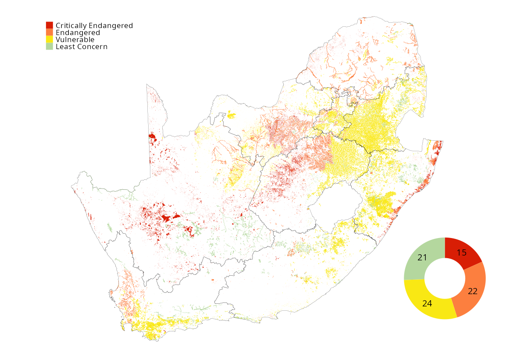

![]()
Inland wetlands remain highly threatened and under-protected. This places the vital services they provide and the incredible biodiversity they support at great risk.
Add landscape photo. Umgeni Vlei Provincial Nature Reserve and Ramsar site, KwaZulu-Natal (Ⓒ xxxx)
18%
of wetland extent
Critically Endangered
of wetland extent
Critically Endangered
86%
of wetland extent
Threatened
of wetland extent
Threatened
Threatened wetland extent constitutes approximately 2.3 million ha of the more than 2.6 million hectares of inland wetlands mapped at the time of NBA 2025. Approximately 86% of inland wetland extent is Threatened, with 20% Critically Endangered, 21% Endangered, and 45% Vulnerable. The remaining 14% is Least Concern.
According to inland wetland ecosystem type, 72% of wetland types are Threatened, with 15 (18%) of inland wetland ecosystem types Critically Endangered, 20 (24%) Endangered, and 25 (30%) Vulnerable. The remaining 22 (27%) wetland types are Least Concern. Threatened wetland ecosystem types are spread widely across South Africa, while Critically Endangered and Endangered wetlands are clustered within the wheat belt / “mielie belt” agricultural lands of the central Free State extending into NorthWest Province, central Northern Cape, the Swartland agricultural lands of the Western Cape, the mining belt of Limpopo Province and the coastal regions of KwaZulu-Natal.

In terms of wetland hydrogeomorphic type, depression wetlands are the most threatened, with 24% of depression wetland types considered to be Threatened, 17% of both floodplain and unchannelled valley-bottom wetland types considered Threatened, and 15% of seep wetland types considered Threatened. Approximately 14% of depression wetland types and 19% of depression wetland extent considered to be Critically Endangered, while 2% of seep wetland types and 1% of unchannelled valley-bottom wetland types and no floodplain types are considered Critically Endangered.
Add text

| Critically Endangered | Endangered | Vulnerable | Least Concern | ||
|---|---|---|---|---|---|
| Depression | Count | 12 | 4 | 4 | 2 |
| Extent (km2) | 5 947 | 142 | 1 084 | 480 | |
| Seep | Count | 2 | 3 | 8 | 8 |
| Extent (km2) | 84 | 353 | 3 795 | 722 | |
| Unchannelled valley-bottom | Count | 1 | 8 | 5 | 6 |
| Extent (km2) | 58 | 1 310 | 906 | 1 308 | |
| Floodplain | Count | 0 | 7 | 7 | 5 |
| Extent (km2) | 0 | 4 340 | 7 717 | 1 660 | |
Download the data here.
Note that the current wetland ecosystem threat status assessment is built on a robust interim wetland ecosystem typology. However, to ensure the most robust and defensible characterisation of wetland types, the National Wetland Map team is actively refining the typology into more detailed, validated subtypes in collaboration with specialist researchers and other national wetland map supporters. Ongoing work means the National Wetland Map is currently improving at a rapid rate and this may result in minor adjustments and an updated ecosystem threat assessment in the near future. For this reason, and as conditions on the ground may have changed since mapping, it is important for consistency that the national ecosystem threat status be referred to but also essential for the data to be verified in the field by a wetland professional and desirable that updates or discrepancies be reported back to the National Wetland Map team.
Approach to assess this indicator
Ecosystem threat status is a headline indicator established for assessing how close ecosystem types are to collapsing or losing vital aspects of their structure, function, or composition.
Each of the 82 inland wetland ecosystem types were placed into one of four categories: Critically Endangered (CR), Endangered (EN), Vulnerable (VU) and Least Concern (LC); where CR, EN and VU together make up the threatened categories. The categories are based on assessments of quantitative and qualitative criteria (and thresholds) linked to ecosystem extent, ecological condition and threatening processes. Read more here: chl_rle_explained.qmd // [For consistency with NBA 2018, the NBA 2025 ETS assessment follows the methods developed by Nel et al. (2007) and modified by van Deventer et al. (2019).] The approach uses the proportion of each ecosystem type that is in a good to fair condition (PES class A B and C) and a set of thresholds. If less than 20% of a type (measured by length of river segment) is in a A or B condition then the type is categorised as Critically Endangered; if between 20-35% of the type is in A or B condition then the type is categorised as Endangered; if less than 60% of the type is in A or or C condition then the type is categorised as Vulnerable; if none of these thresholds are crossed then the type is Least Concern. This method aligns with the South African Framework for Threatened ecosystems but not the IUCN RLE 1.1. Processes to transition to the IUCN framework are underway - but in the interest of comparing past results, the 2011 methods have been implemented.
Technical documentation
Code repository: https://github.com/askowno/RLE_wetl
Key publications:
xx
References
- xx